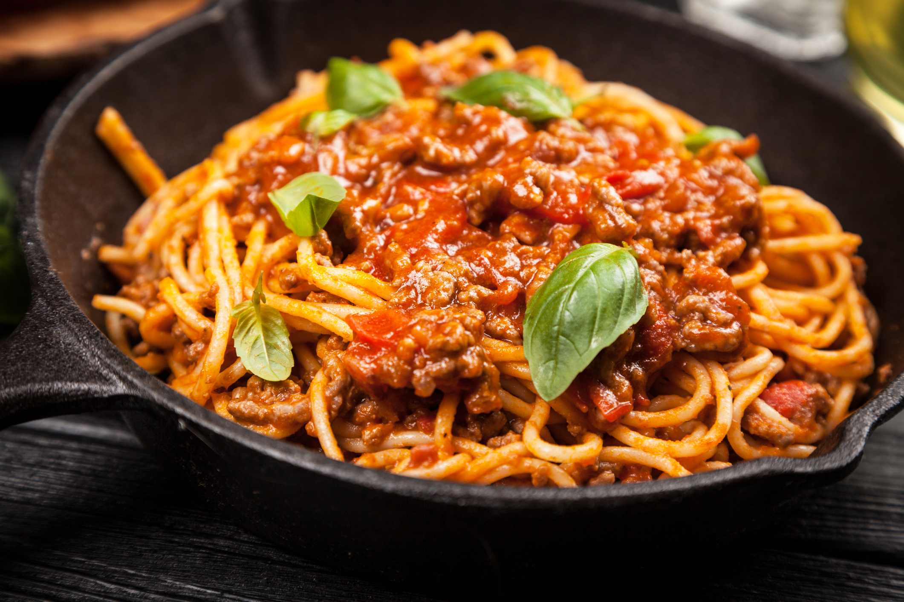

Macarronada com molho de carne

INGREDIENTES
- 1 unidade de macarrão (pacote de espaguete 500g)
- 500 gramas de carne (patinho cortado em cubos)
- 2 unidades de molho de tomate (caixinhas)
- 1 unidade de dentes de alho picado
- 1 unidade de cebola picada
- 2 colheres de sopa de azeitona verde picada
- 10 unidades de manjericão fresco
- 1 colher de sopa de óleo de soja (a gosto)
- 1/2 xicarás de parmesão ralado (a gosto)
MODO DE PREPARO
- Em uma panela, coloque um fio de óleo de soja e refogue a cebola e o alho picado até que fiquem dourados e liberem um aroma delicioso.
- Acrescente a carne cortada em cubos e refogue até que fique bem cozida e com uma linda coloração dourada.
- Junte o molho de tomate, as azeitonas picadas e tempere com sal a gosto. Deixe cozinhar por mais 5 minutos para que os sabores se misturem.
- Adicione as folhinhas de manjericão fresco, que vão proporcionar um aroma irresistível à macarronada, e desligue o fogo.
- Cozinhe o espaguete conforme as instruções da embalagem, garantindo que fique no ponto perfeito.
- Sirva a carne com molho sobre o espaguete cozido, finalizando com queijo ralado a gosto, que irá trazer um toque de cremosidade e sabor à receita.